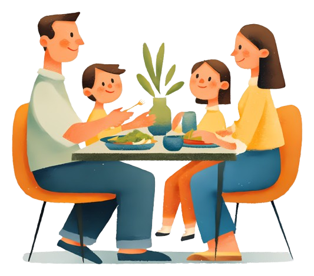
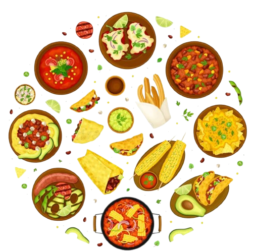

Misión
Ofrecer comida tradicional mexicana preparada con ingredientes frescos y recetas de casa, a precios accesibles y en un ambiente familiar, para que cada cliente se sienta como en casa.
Restaurante Sabor Casero nació con una idea sencilla de Lidia Belmares: servir la comida que se prepara en casa, con recetas tradicionales mexicanas que pasan de generación en generación. Estamos en Ejido Tepehuaje "Pueblo Nuevo", Cadereyta Jimenez, Nuevo León, y recibimos a cada cliente como parte de la familia.
Cocinamos con ingredientes frescos, porciones generosas y precios accesibles. Conoce nuestro menú, revisa nuestros servicios o visítanos.
Ofrecer comida tradicional mexicana preparada con ingredientes frescos y recetas de casa, a precios accesibles y en un ambiente familiar, para que cada cliente se sienta como en casa.
Ser el restaurante de comida casera preferido en Cadereyta Jiménez y la región, reconocido por su sabor, su calidez en el servicio y su compromiso con las tradiciones culinarias de México.
Seleccionamos verduras, carnes y especias frescas para que todo tenga el mejor sabor.

Tratamos a cada cliente como parte de nuestra familia.
Precios claros y porciones justas, sin sorpresas.

Respetamos y conservamos las recetas mexicanas de siempre.
Cocina y mesas limpias para cuidar tu salud.